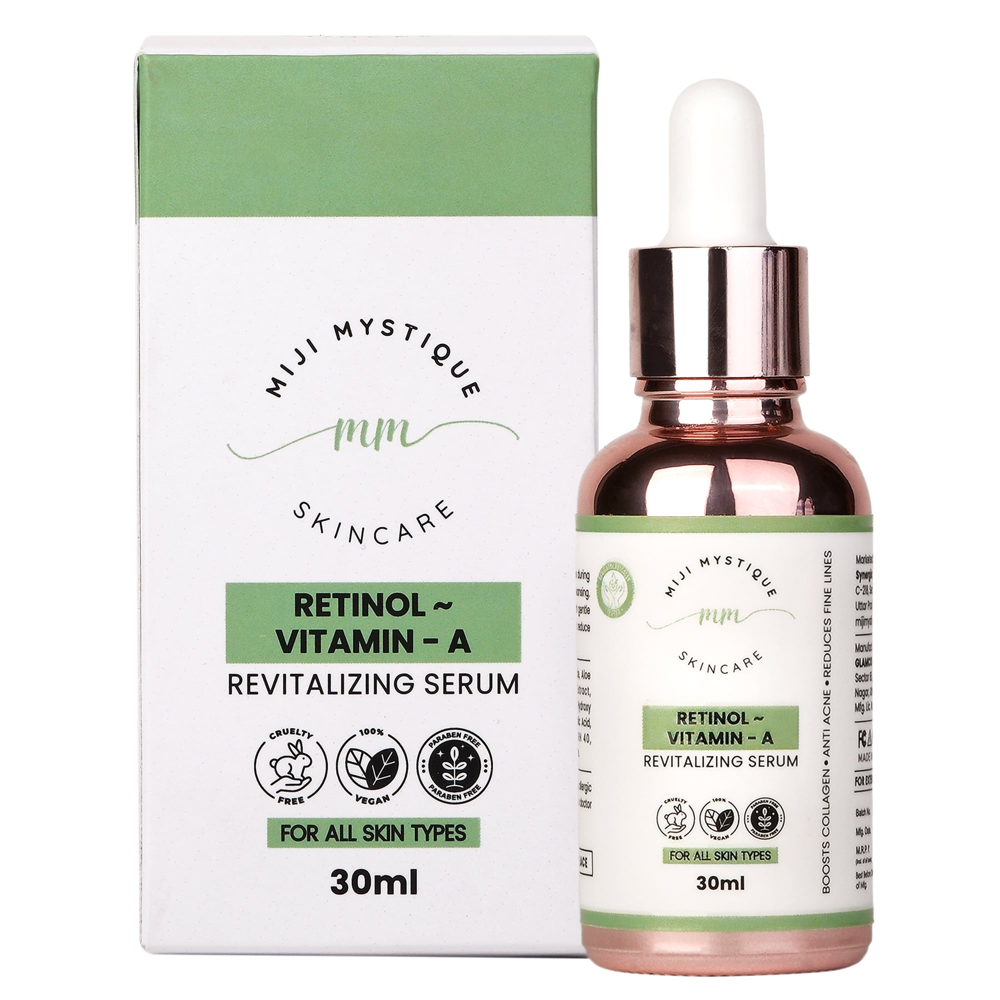

MIJI MYSTIQUE: REVEAL YOUR SKIN'S TRUE RADIANCE
Smooth. Refine. Renew. Enriched with Retinol and Vitamin E, this serum reduces signs of aging, refines pores, and promotes cell turnover—revealing youthful, radiant skin.
Looking to enhance your skincare routine and achieve smoother, youthful, and revitalized skin? Vitamin A, commonly known as Retinol, is renowned for its remarkable anti-aging and skin-renewing properties, effectively targeting wrinkles, uneven skin texture, and signs of aging.
Vitamin A (Retinol) is a powerful skincare ingredient clinically proven to boost skin cell turnover, stimulate collagen production, and reduce the appearance of fine lines, wrinkles, and uneven skin tone.
Popular search terms: retinol serum, anti-aging skincare, wrinkle reduction, skin renewal serum, Vitamin A benefits.
Apply Vitamin A (Retinol) Serum to clean, dry skin in the evening. Gently massage into the face and neck until fully absorbed. Follow with your favorite moisturizer. Always apply sunscreen during the day, as retinol can increase sun sensitivity.
Ideal for most skin types, Vitamin A serum seamlessly fits into your nightly skincare regimen, delivering impressive, transformative results.
Unlock younger-looking skin today—experience the renewing power of Vitamin A (Retinol) Skincare Serum.